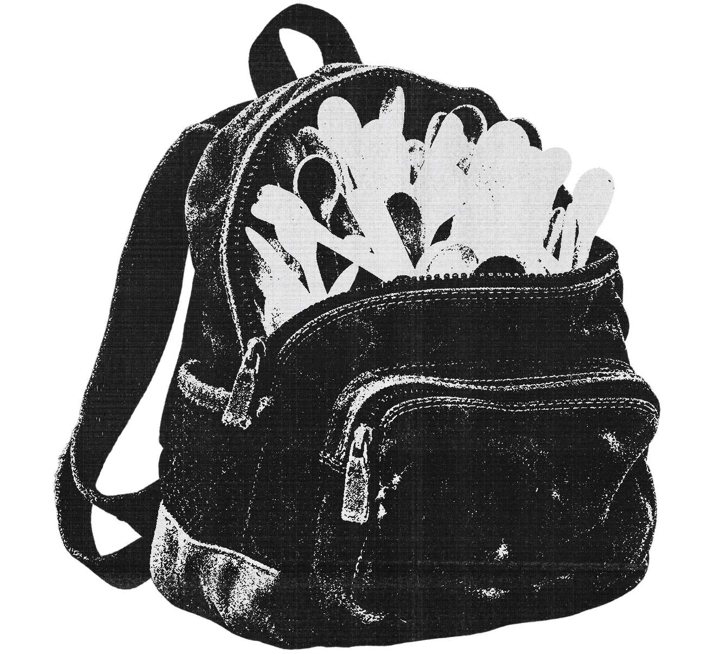
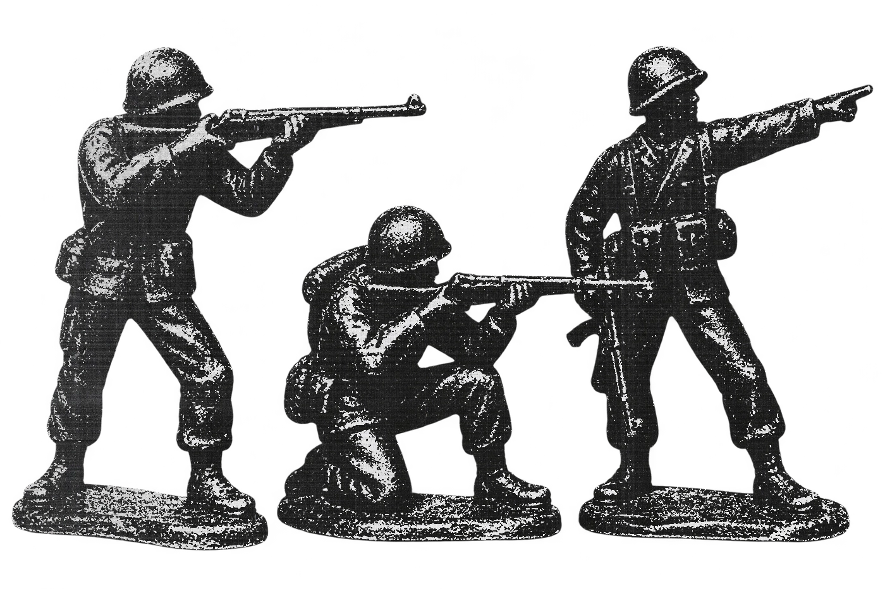

<!doctype html><meta charset="utf-8"><link rel="stylesheet" href="../dist/continuous/first-house.css"><style>body{margin:0}#first-house{visibility:visible;background:#fff url('../dist/assets/fondo-papel.webp');height:100vh}.fh-sky{visibility:visible;background:none}.fh-end{visibility:visible}.fh-paper-burn{z-index:10}</style><section id="first-house"><div class="fh-sky fh-layer"><div class="fh-sky-world"><div class="fh-macro"><div class="fh-macro-content"></div></div></div><canvas class="fh-paper-burn"></canvas></div><div class="fh-end fh-layer"><button class="fh-soldiers"></button></div></section><pre id="result"></pre><script>const burnCanvas=document.querySelector('canvas'),burnContext=burnCanvas.getContext('2d');let burnFrame=-1,burnSize='';const clamp=x=>Math.max(0,Math.min(1,x)),ease=(a,b,x)=>{const t=clamp((x-a)/(b-a));return t*t*(3-2*t)};const A={paper:'../dist/assets/fondo-papel.webp'};let burnVisible=.5;const darkPaper=new Image(),darkSurface=document.createElement('canvas');let darkSurfaceSize='';
darkPaper.onload=()=>{darkSurfaceSize='';burnFrame=-1;drawPaperBurn(burnVisible)};
darkPaper.src=A.paper;
function revealDarkPaper(ctx,w,h,ratio){
 if(!darkPaper.complete||!darkPaper.naturalWidth)return;
 const size=w+'x'+h;
 if(darkSurfaceSize!==size){
  darkSurface.width=w;darkSurface.height=h;
  const paper=darkSurface.getContext('2d'),tw=1600*ratio,th=tw*darkPaper.naturalHeight/darkPaper.naturalWidth;
  const x=(w-tw)/2,y=-190*innerHeight/100*ratio;
  paper.fillStyle='#0b0b0d';paper.fillRect(0,0,w,h);
  paper.filter='grayscale(1) invert(1) brightness(.7)';
  for(let px=x-Math.ceil(x/tw)*tw;px<w;px+=tw){
   for(let py=y-Math.floor(y/th)*th-th;py<h;py+=th)paper.drawImage(darkPaper,px,py,tw,th);
  }
  paper.filter='none';darkSurfaceSize=size;
 }
 ctx.save();ctx.globalCompositeOperation='source-in';ctx.drawImage(darkSurface,0,0);ctx.restore();
}
function drawPaperBurn(progress){
 const ratio=Math.min(devicePixelRatio||1,1.5),w=Math.round(innerWidth*ratio),h=Math.round(innerHeight*ratio),size=w+'x'+h;
 const frame=progress>=1?181:Math.floor(progress*180);
 if(size===burnSize&&frame===burnFrame)return;
 burnSize=size;burnFrame=frame;
 if(burnCanvas.width!==w||burnCanvas.height!==h){burnCanvas.width=w;burnCanvas.height=h}
 const ctx=burnContext;if(!ctx)return;
 ctx.clearRect(0,0,w,h);if(progress<=0)return;
 ctx.fillStyle='#0b0b0d';
 if(progress>=1){ctx.fillRect(0,0,w,h);revealDarkPaper(ctx,w,h,ratio);return}
 const cx=w*.5,cy=h*.59,remaining=1-ease(0,1,progress),points=[];
 for(let i=0;i<240;i++){
  const a=i/240*Math.PI*2,dx=Math.cos(a),dy=Math.sin(a);
  const edge=Math.min((dx>0?w-cx:cx)/Math.max(.0001,Math.abs(dx)),(dy>0?h-cy:cy)/Math.max(.0001,Math.abs(dy)));
  const rough=Math.sin(a*13+.7)*.035+Math.sin(a*29+2.1)*.019+Math.sin(a*61)*.008;
  const radius=edge*Math.max(0,remaining*(1.07+rough)-progress*.055);
  points.push([cx+dx*radius,cy+dy*radius]);
 }
 const outline=()=>{ctx.moveTo(...points[0]);points.slice(1).forEach(pt=>ctx.lineTo(...pt));ctx.closePath()};
 ctx.beginPath();ctx.rect(0,0,w,h);outline();ctx.fill('evenodd');
 revealDarkPaper(ctx,w,h,ratio);
 // Char is on the surviving paper side; a narrow ember follows the same contour.
 ctx.save();ctx.beginPath();outline();ctx.clip();
 ctx.lineJoin='round';
 for(const [width,color] of [[22,'#362318'],[12,'#68402a'],[5,'#bb5429'],[1.5,'#e8a15b']]){
  ctx.beginPath();outline();ctx.strokeStyle=color;ctx.lineWidth=width*ratio;ctx.stroke();
 }
 ctx.restore();
}
;try{drawPaperBurn(.5);const edge=burnContext.getImageData(0,0,1,1).data,center=burnContext.getImageData(burnCanvas.width/2,burnCanvas.height*.59,1,1).data;if(edge[3]!==255||center[3]!==0)throw Error('Invalid burn coverage');document.querySelector('#result').textContent='BROWSER PASS: black edge, transparent paper center, production canvas draw';}catch(e){document.querySelector('#result').textContent='FAIL '+e.stack}</script><script>darkPaper.addEventListener('load',()=>{try{burnFrame=-1;drawPaperBurn(1);const data=burnContext.getImageData(0,0,burnCanvas.width,burnCanvas.height).data;let lo=255,hi=0;for(let i=0;i<data.length;i+=400){lo=Math.min(lo,data[i]);hi=Math.max(hi,data[i]);}if(hi<=lo||hi>150)throw Error('Expected dark textured paper: '+lo+'..'+hi);document.querySelector('#result').textContent='BROWSER PASS: original paper loaded, inverted dark texture verified ('+lo+'..'+hi+'), opaque burned surface';burnFrame=-1;drawPaperBurn(.5);}catch(e){document.querySelector('#result').textContent='FAIL '+e.stack}});</script>